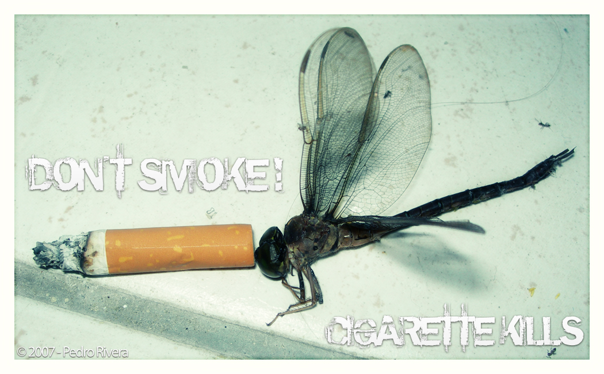
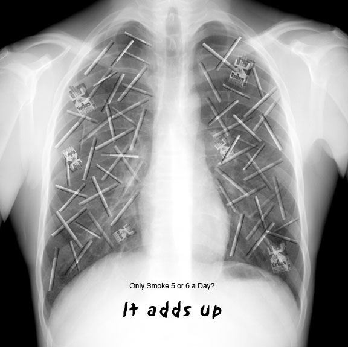
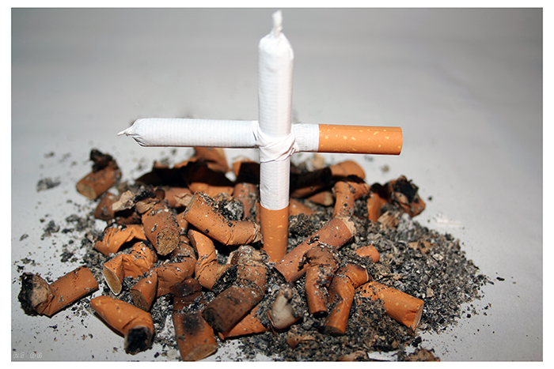
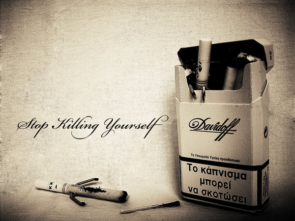
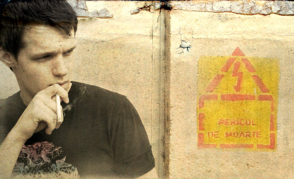
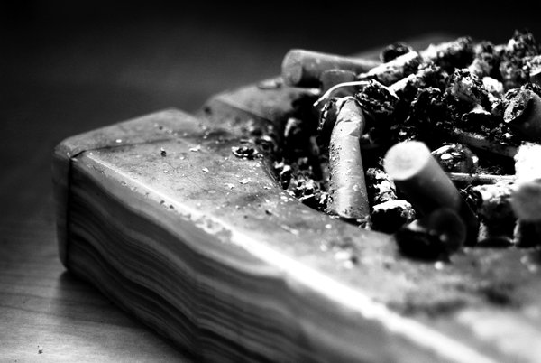
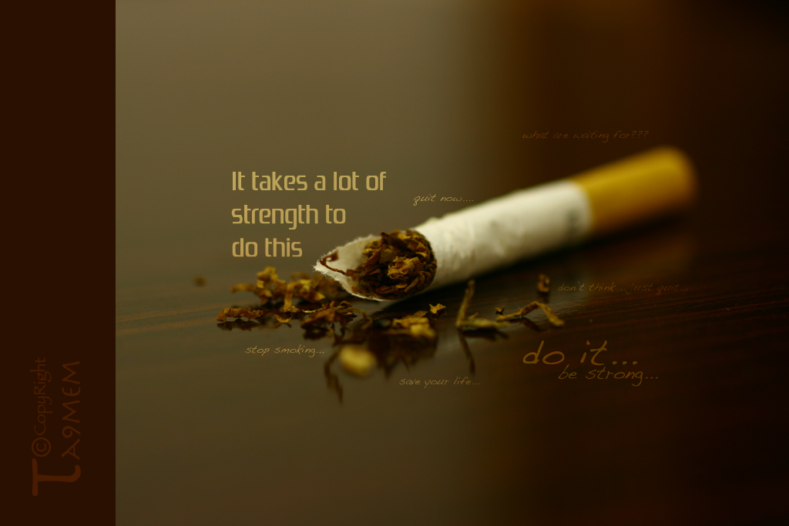

Pagina principală
Despre site
Fumatul?
Acţiuni antifumat
Linkuri utile şi afişe
Contact
Linkuri utile
PotSăMăLas
Wikipedia-Fumatul
Wikipedia-Tutunul şi sănătatea
Adolescenţii şi fumatul
Efectele fumatului la femei
Fumatul pasiv
Cum să abandonezi fumatul
6 motive solide să te laşi de fumat
Fumatul ne scade inteligenţa
Adevăratul cost al fumatului (video - engl.)
Cum dăunează fumatul plămânilor (video - engl.)
Fumatul - Opreşte-te până nu e prea târziu (video - subtitrare ro.)
Fumatul ucide(video - engl.)
Afişe






